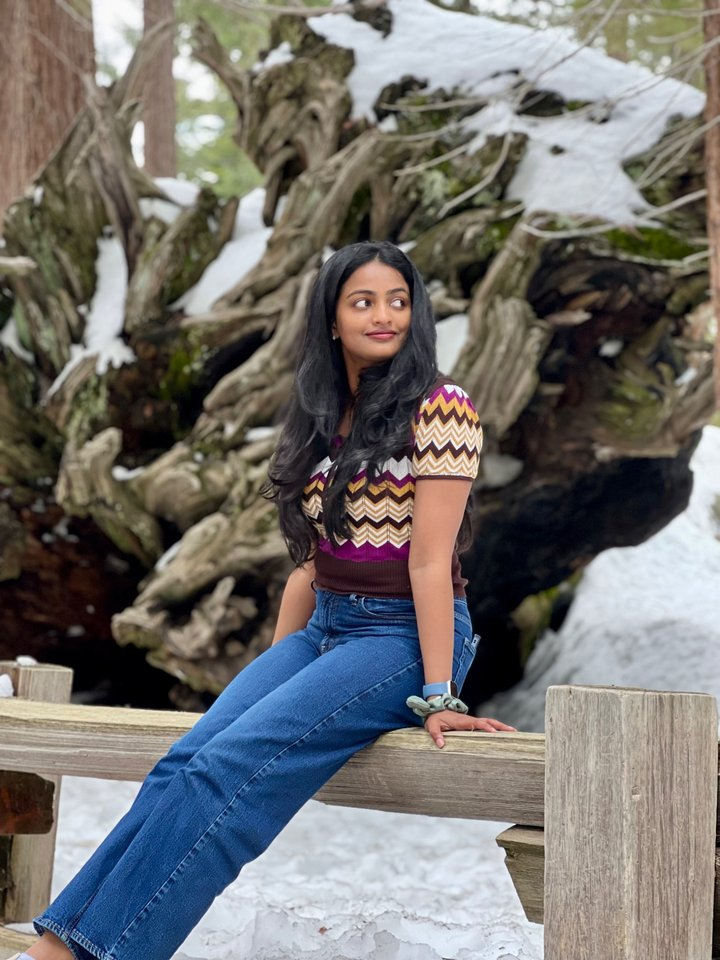

Research scholar · ISI Kolkata
Deepika Vadlamudi
Research in robust machine learning
I’m a research scholar at the Machine Intelligence Unit, Indian Statistical Institute, Kolkata.

Research interests
Self-supervised learning, visual representation learning, and adversarial robustness.
Publications
-
Master’s thesis · Stevens Institute of Technology
Robust Learning of Halfspaces in the Presence of Agnostic Noise
Studied and implemented algorithms for learning linear classifiers when labels can be corrupted. ProQuest Dissertations Publishing, 2021.
-
Journal article · International Journal of Communication Systems
A Novel Self-Healing Key Distribution Scheme Based on Vector Space Access Structure and MDS Codes
Co-authored with V. Ch. Venkaiah.
-
Book chapter · Handbook of Statistics, vol. 38
Mathematical Essentials
Co-authored a chapter in Computational Analysis and Understanding of Natural Languages, published by Elsevier.
Projects
-
Entity retrieval at scale
Built a LightGBM ranker for entity linking in an AWS hackathon. I worked on candidate ranking, holdout evaluation, and inference for more than 1.7 million queries.
-
Image classification with CUDA
Implemented a neural network for Fashion-MNIST in CUDA to explore how the computations map to GPU kernels.
-
Parallel PCA with MPI
Implemented principal component analysis across CPU cores during an internship at DRDO–ANURAG, using MPI and Householder transformations.
Experience
I hold an MS in Computer Science from Stevens Institute of Technology.
-
Research scholar · Current
Indian Statistical Institute, Kolkata
Research in self-supervised learning and adversarial robustness at the Machine Intelligence Unit.
-
Software engineer · 2023–2024
Independent computer vision project
Developed a computer vision application with Python, MediaPipe, and OpenCV, assembled an image dataset, and evaluated object detection models.
-
Field engineer · 2022
Domino Data Lab
Investigated production incidents, built machine learning demonstrations, benchmarked distributed hyperparameter tuning with Ray Tune, and trained platform users.
-
Graduate teaching assistant · 2021–2022
Stevens Institute of Technology
Supported courses in deep learning, probability and stochastic processes, and mathematical foundations of machine learning.
-
Research internships
DRDO–ANURAG and IDRBT
Worked on parallel PCA at DRDO–ANURAG and experimented with weighting in PCA at IDRBT.
Writing
Tutorials and notes on machine learning, GPU programming, and developer tools.